A Three-Bar Linkage
In the second tutorial we want to explore the dynamics of a little mechanical linkage. In particular, you will learn how to make bars of a fixed length. You will also learn how to produce a geometric locus of a point.
Making a Bar
After starting Cinderella or erasing a previous configuration, switch to circle by radius mode by pressing the button
 . This mode is used for working with circles whose radii remain constant when their centers move. Move the mouse pointer over the view. Press the left mouse button. Hold the button while dragging the mouse. Release the mouse. With these actions you have generated a circle. Switch to move mode to see how the circle behaves. When you select the center you can move the position of the circle, and the radius stays constant. You can also select the circle itself and move it. Then its center stays fixed and the radius of the circle changes.
. This mode is used for working with circles whose radii remain constant when their centers move. Move the mouse pointer over the view. Press the left mouse button. Hold the button while dragging the mouse. Release the mouse. With these actions you have generated a circle. Switch to move mode to see how the circle behaves. When you select the center you can move the position of the circle, and the radius stays constant. You can also select the circle itself and move it. Then its center stays fixed and the radius of the circle changes.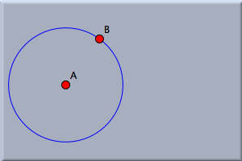 |
| Figure 1: A first circle |
We now want to add a point that is bound to the boundary of the circle. Select add a point mode. Move the mouse over the view. With the button pressed, move the mouse pointer to the boundary of the circle. When the circle is highlighted, release the mouse. You have now created a point that is on the boundary of the circle. You could alternatively have clicked the mouse over the circle boundary. However, that gives you a bit less control over whether you actually hit the circle. Your configuration should now look approximately like that in Figure 1.
Switch to move mode to see how this new point behaves. If you select it and drag the mouse, the point will never leave the circle; it attempts to remain as close to the mouse position as possible. When you move the center of the circle or change the circle's radius, the point also stays on the circle. The point furthermore keeps its relative angle to the center. Choose the interactive add a segment mode by pressing the
 and draw a segment from the center to the point on the perimeter (see Figure 2).
and draw a segment from the center to the point on the perimeter (see Figure 2).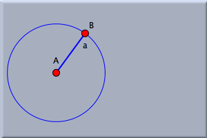 |
| Figure 2: A bar |
This line now behaves like a bar of fixed length, given by the radius of the circle. The only way to change its length is to change the radius of the circle.
Adding Two More Bars
We now want to add two more bars to complete the three-bar linkage that was presented in the introduction. The linkage is a chain of three consecutive bars that is pinned down at each of its ends. Switch to circle by radius mode again and add a second circle to the right of the first one. Do not let the two circles intersect.
The radius of the second circle represents the length of the third bar in the row (we have not created the second one yet). Before finishing the construction we should analyze the situation. If point C in our construction is to be linked to point B of the construction by two bars of given lengths, then there is not much freedom for the point that is common to those two bars. In fact, there are exactly two possible positions for this point. They are the two intersections of two circles: one circle around C, already drawn, and another, yet to be drawn, circle around B.
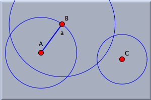 |
| Figure 3: Two more circles |
Therefore, as the next step, draw a circle around point B in circle by radius mode. Make sure that its radius is large enough so the circle intersects the circle around C. This stage of the construction is shown in Figure 3. Finally, draw a segment in segment mode
from B to one of the intersection points of the circle around B and the circle around C (this is an alternative to adding a line and clipping it to its endpoints).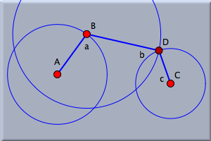 |
| Figure 4: The three bars |
This new point is automatically labeled D. Observe that this point is not a free point, since its position is determined, up to choosing the second intersection, by the positions of A, B, C, and the radii of the circles.
Finish the construction by adding the third bar from C to D. Most probably, the lines will be already clipped, since you made this choice in the appearance editor. If not, select them and use the appearance editor to clip them. Your drawing should now look like Figure 4.
Moving the Construction
The lengths of the bars are determined by the radii of the circles. Select move mode again and play with the construction. An interesting thing happens when you move point B, the point on the first circle.
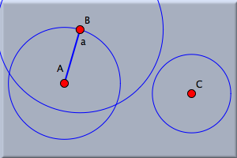 |
| Figure 5: The bars are too short |
First of all, you notice that the whole construction has exactly one degree of freedom when point B is moved. Moving it allows the whole construction to behave as if it were a mechanical linkage. We can consider the possibility of moving B as a kind of "driving input force"; that is what CAD people would call it. There are positions for point B for which the bars are too short (see Figure 5), which means that the two circles no longer intersect. When this happens, the lines and the intersection point disappear.
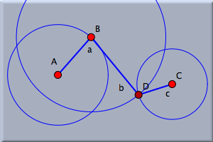 |
| Figure 6: After coming back |
One of the most interesting things, which you might initially overlook, happens if you return point B to the original position, where the circles once again intersect: the other point of intersection is chosen; the linkage takes the other possible position. Try this many times to get a feeling for it. Move point B back and forth, so that the bars disappear and reappear. This behavior seems a bit counterintuitive at first, but it is exactly the right thing to happen. Imagine that the bars were made from real matter, steel or wood, for instance. Then they would have a certain mass. What would happen if you pushed the whole construction and let it move freely, driven only from inertial forces? The two bars, those that disappear in the drawing, would come to a position in which they formed a straight line. Then point D would "sweep over", and the whole construction would move to the other possible position.
Starting an Animation
If you still do not believe that this is natural behavior, choose animation mode by pressing
 . The message line below the view asks you to choose a "moving element." In our case we want B to be the moving point: Click B. Since point B has only one degree of freedom, it is clear how to move it, and the animation is started immediately. Otherwise, you would have been asked to select a "road" on which B should move. In this construction the road is clear: it is the first circle.
. The message line below the view asks you to choose a "moving element." In our case we want B to be the moving point: Click B. Since point B has only one degree of freedom, it is clear how to move it, and the animation is started immediately. Otherwise, you would have been asked to select a "road" on which B should move. In this construction the road is clear: it is the first circle.An animation control panel
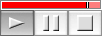 |
is added to the geometric view. It has buttons like a CD player to start, stop, and pause the animation, and it has a slider to control the animation speed. By pressing the play button you can start the animation.
For a moment enjoy watching the animation. Observe that point B moves only in a region in which the bars are long enough. It "knows" when to change the direction. Cinderella tries to model true physical behavior. It does not add masses to the moving elements, but it uses methods from complex analysis to determine the most reasonable thing to do. You can also move the free elements during the animation. Now exit the animation by pressing the "Stop" button in the animation controller.
Drawing a Locus
We now would like to know how the midpoint of the middle bar moves during the animation. We first add the midpoint. Choose midpoint mode
 . By a press–drag–release sequence you can add the midpoint of two points: Move the mouse over point D. Press it, and with the left button pressed move over point B. Now release the mouse button. The midpoint is added.
. By a press–drag–release sequence you can add the midpoint of two points: Move the mouse over point D. Press it, and with the left button pressed move over point B. Now release the mouse button. The midpoint is added.Now choose locus mode
 . This mode requires that you select a "mover," a "road," and a "tracer" in this order. The mover is the element that moves (the "driving force"). The road, which is the path along which the mover will move, must be incident to the mover. The tracer is the point whose trace will be calculated.
. This mode requires that you select a "mover," a "road," and a "tracer" in this order. The mover is the element that moves (the "driving force"). The road, which is the path along which the mover will move, must be incident to the mover. The tracer is the point whose trace will be calculated.Click point B (the "mover"). Cinderella recognizes that this point has a unique road and selects the circle as well. So finally, point E has to be selected as tracer. It takes a second, and the locus is generated automatically. You can switch to move mode and see how the locus changes when you move the free elements.
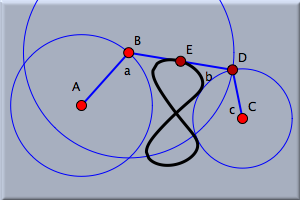 |
| Figure 7: Constructing a locus |
If you restart the animation by pressing the "play" button you will see how the locus was generated.
Experimenting
It is worth to experiment with the resulting construction. The constructed locus varies dynamically with movements of the free parameters of the construction (points A and C and the radii of the circles). The locus may take interesting and quite surprising shapes, as the following collection of pictures shows.
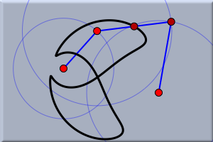 | 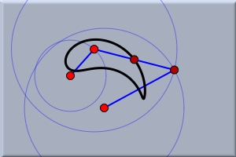 |
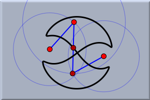 | 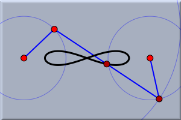 |
Page last modified on Saturday 03 of September, 2011 [10:29:51 UTC].
The original document is available at
http://doc.cinderella.de/tiki-index.php?page=Three-Bar%20Linkage